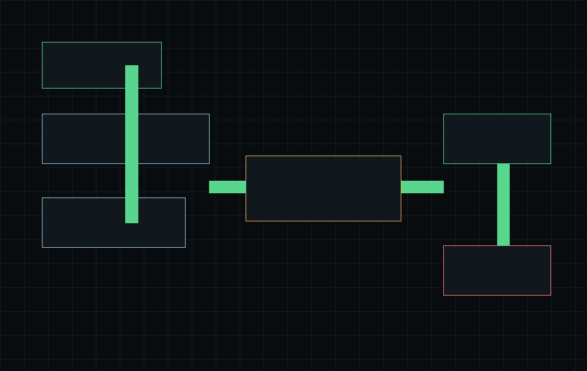

読めない
変数番号、ラベル、条件分岐、GOTOが増えるほど、処理の流れを追うだけで時間がかかります。
v0.1.0 公開中 / FANUC系NCマクロ読解支援
NC Macro Visualizer は、FANUC系NCマクロを静的解析し、 NCコードを「何をしている処理か」が分かる一般的なプログラムフローチャートへ翻訳する 読解支援ツールです。 v0.2.0 の開発テーマは、初心者・PC操作が苦手な人向けのWeb体験版です。
1. NCファイルを選ぶ
2. 解析する
3. 結果を保存する
サンプル: 04_variables.nc
フローチャート:
START
↓
N30 条件分岐
├─ はい → N80
└─ いいえ → N40
注意点:
実機動作は保証しませんProblem
変数番号、ラベル、条件分岐、GOTOが増えるほど、処理の流れを追うだけで時間がかかります。
作った本人の頭の中にだけ意味が残り、保守・改善・引き継ぎのたびに確認コストが膨らみます。
Mコードは機械、PMC、ビルダー設定に依存します。未知のMコードを断定すると誤読につながります。
Before / After
Outputs
目的はNCマクロを実行することではありません。既存資産を読み、レビューし、 引き継げる形に整えることです。

N番号やコード行ではなく、値を計算する、条件で分かれる、別プログラムを呼ぶ、といった処理内容へ翻訳して表示します。
どの値がどの行で入り、どの行で使われているかを一覧で確認できます。
フローチャートを見ながら確認した内容を、Markdown形式のメモとして保存できます。
Scope
NCマクロを静的解析し、初心者でも追える一般的なプログラムフローチャートへ翻訳します。
GitHub
NCファイルを選ぶ、解析する、結果を保存する。PC操作に慣れていない人でも、 画面を移動せずにフローチャートと注意点を確認できます。CLIは開発者向け操作としてREADMEにまとめています。
Developer
NC Macro Visualizer は、製造現場で蓄積されたNCマクロを ブラックボックスのまま放置せず、レビュー可能な技術資産として扱うための小さなツールです。
初期版では、あえて実行やシミュレーションに踏み込まず、静的解析と保守的な表示に範囲を絞っています。
Contact
未対応のNC方言、読み取りたい構造、出力形式への要望は、GitHub Issue または README 経由で共有してください。